Arduinoとは？
ワンボードマイコンの一種で，2005年にイタリアのInteraction Design Institute Ivreaで，
「安価で簡便なデジタル制御装置を作り販売するプロジェクト」として始まった．
I/Oポートを備え，インタラクティブな装置として用いることができる．
ハードウェアの設計はクリエイティブ・コモンズライセンスで，
統合開発環境のソースコードもGPL v2ライセンスで提供されている．
I/Oポートとは？
Arduinoなどワンボードマイコンに装備された，Input（入力），Output（出力）のポート
通常ジャンプワイヤーなどを利用して，センサーやアクチュエータと接続を行う．
- Arduinoボード 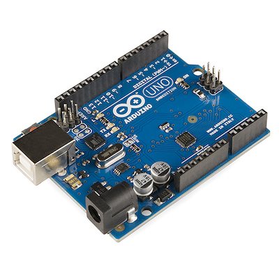
- 統合開発環境（IDE） 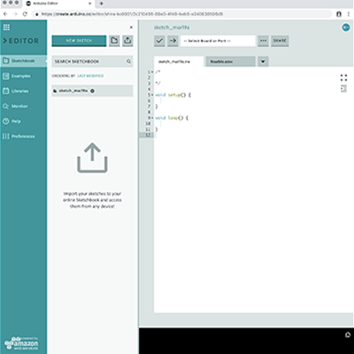
開発環境の構築 "ArduinoCreate"
ここではweb開発環境"ArduinoCreate"を使う
- Arduino CreateのWebページに行く 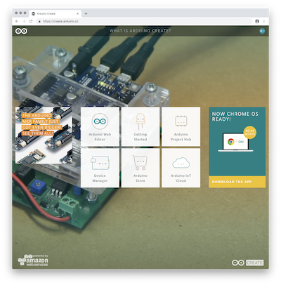
- Arduino Web Editorをクリック 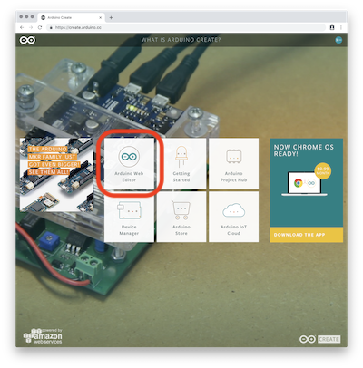
- google Accountでサインインしましょう 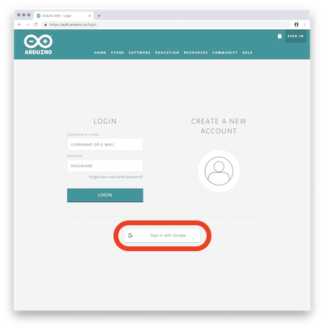
- ユーザーネーム埋めるのと一番上の項目をチェック 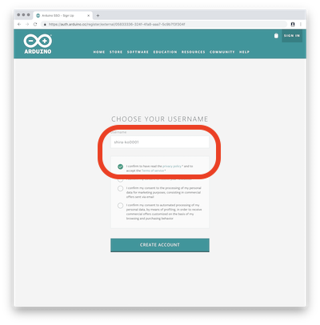
- webEditorがひらく！ 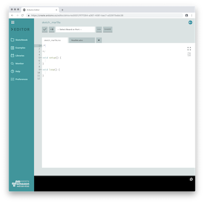
- ちょっと戻って">GettingStartedを開く 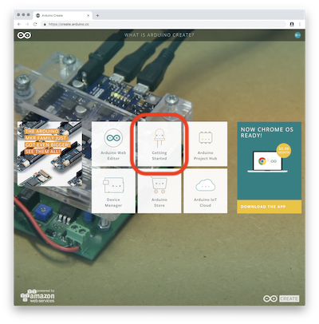
- 一番下のArduinoPluginをクリック 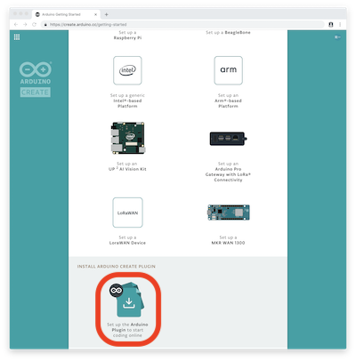
- 次々進んでdmgファイルをダウンロードする
- dmgファイルを展開しinstallerを起動してインストールする
- これで初期設定終了Editorに戻り開発を始める
 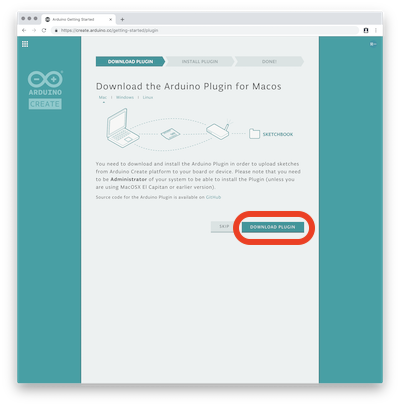
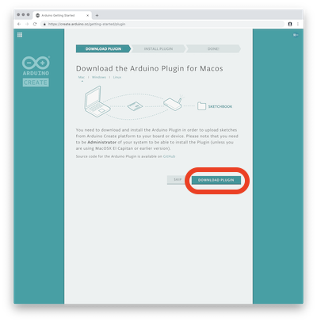
First Project「Lチカ！」
フィジカルコンピューティングの"Hello, World！"
Lチカ（LEDがチカチカ明滅する）をやる
事前準備
- LEDには極性がある⬇︎⬇︎
- 電源を入れていない状態で、アノードを13番ピン・カソードをGNDに差し込む

！写経！
//LedBlink
void setup() {
// デジタルピンの初期化：13番ピンを出力に設定
pinMode(13, OUTPUT);
}
// loop関数はp5jsのdraw関数とおなじ
void loop() {
digitalWrite(13, HIGH); // LEDをON
delay(1000); // 1秒待つ
digitalWrite(13, LOW); // LEDをOFF
delay(1000); // 1秒待つ
}
プログラムをアップロードする
小さいとはいえ，Arduinoはパソコンのようなもの
プログラムをアップロードしないと動かない
- PCとArduinoをつなぐ
- Arduinoって書いてあるポートを選択
（見えない人はプラグインが上手く入っていない可能性がある）
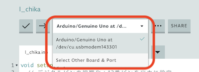
- コードのVerify!(検証する) 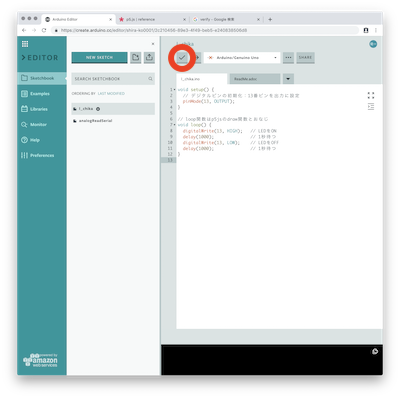
- アップロード！ 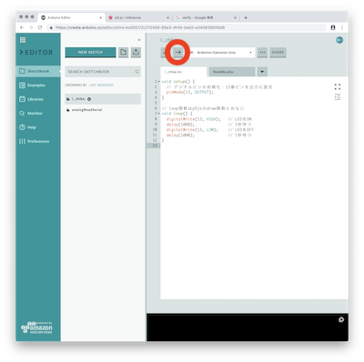
- 上手くいけば，LEDがフラッシュした後，１秒ごとに明滅する
- Hello, Physical World!

ミニッツタスク
- 明滅のタイミングを変えてみる
- ex: 3秒間隔の明滅
- ex: 5秒点灯3秒の消灯
- モールス信号で"SOS"送ってみる
- Reference↓↓
- ややこしかったモールス信号を簡単に覚えられる1枚の斬新な図とは